A Quick Afternoon in Mt. Pleasant
Tap a stop to read more — open the guide to customize this route.
The purpose of this plan is to give you a good variety of spots to check out. Even if you aren't necessarily into some of the shops, this plan will give you a good insight into what this neighbourhood has been about for years. Once you get off the Skytrain, you can head to Brassneck and get a couple small pours to sample what a Pacific Northwest Craft Brewery has to offer. Their beers have historically been flavourful and unique.
Then, head across the street to Antisocial Skateboard shop, a long-standing hub for a vibrant and diverse skateboarding community. They have iconic shop tee's, art, and magazines if you aren't a skateboarder yourself.
From there, head up the street to get to the vintage shopping block, where you can head into any of Fish Market Studio, Pulpfiction Books, F as in Frank, Glory days, or Mintage Mall, to browse what some of the best vintage pickers in the city have to offer.
Either works — pick one in the guide
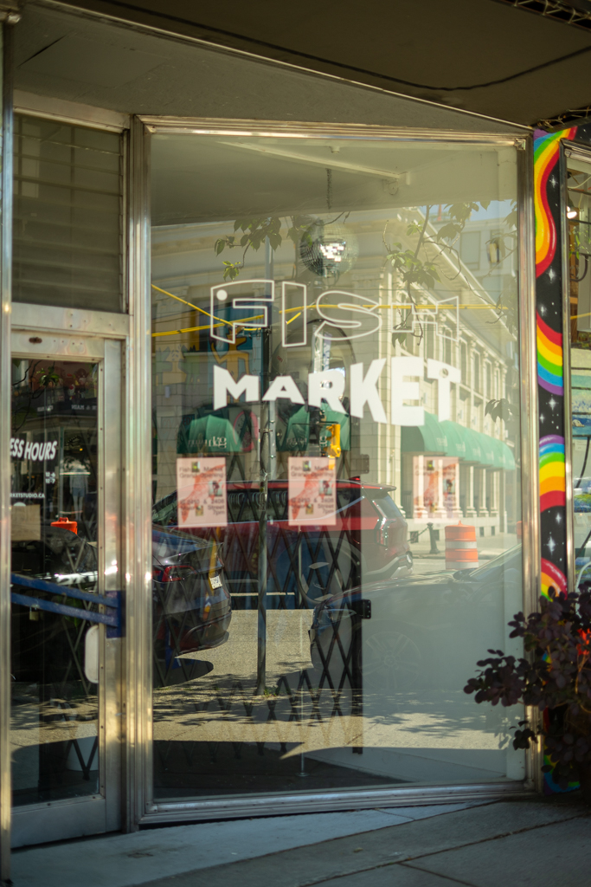
3. Fish Market Studio
4. Pulpfiction Books
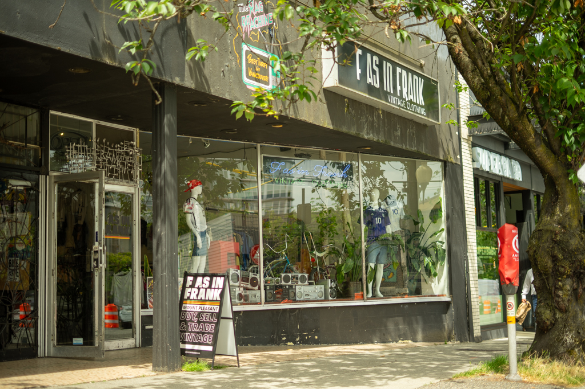
5. F as in Frank Vintage Clothing
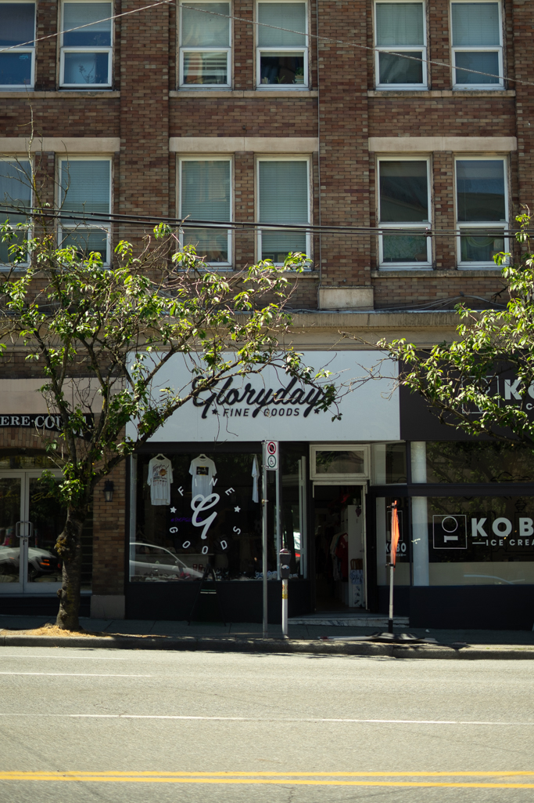
6. Glorydays Fine Goods
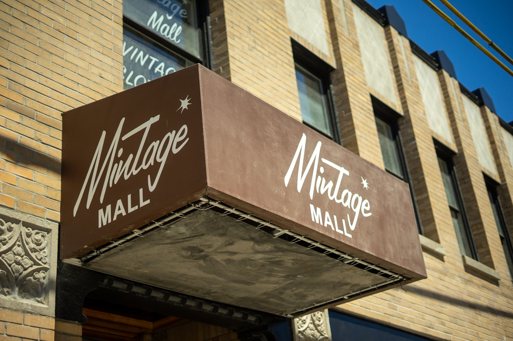
7. Mintage Mall
If you're feeling a bit hungry, at this point, maybe you want to stop at Carp Sushi for a roll or bowl before heading to the next few stops. If sushi isn't your thing, then Federal Store is not too far away, where you can grab a baked good or sandwich.
Either works — pick one in the guide
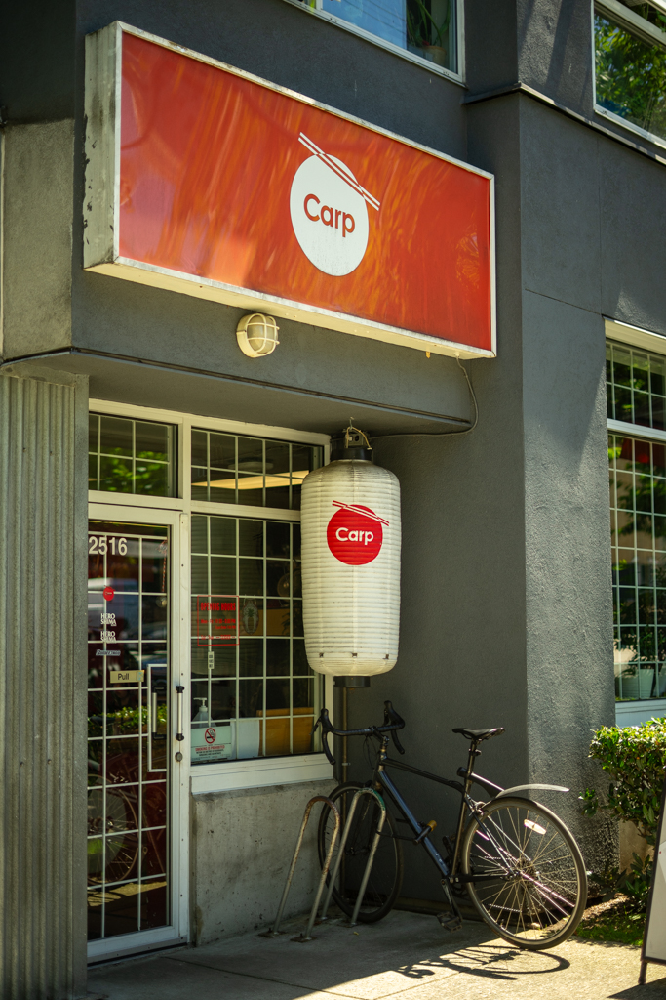
8. Carp Sushi&Bowl
9. The Federal Store Luncheonette & Grocer
From there, you can walk down to Neptoon Records, taking either Quebec (to see what the local neighborhoods are like) or Main, if you want to stop in at a few more shops on the way.
Once you are at Main, you can check out Eugene Choo, Woo to See you, Collage Collage, or the Sellution, depending on what you are interested in.
Either works — pick one in the guide
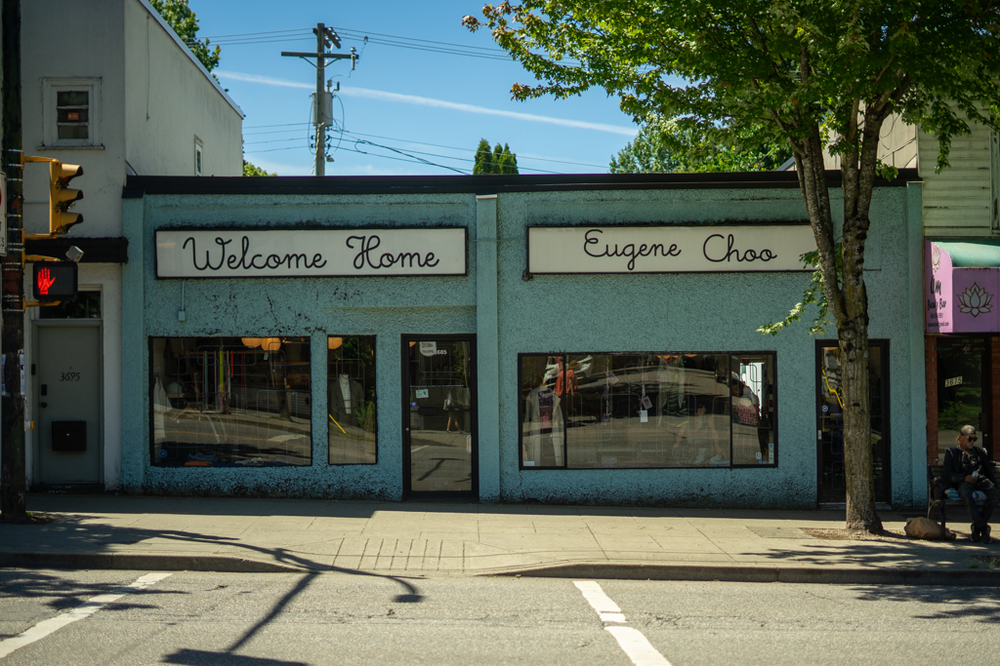
11. Eugene Choo
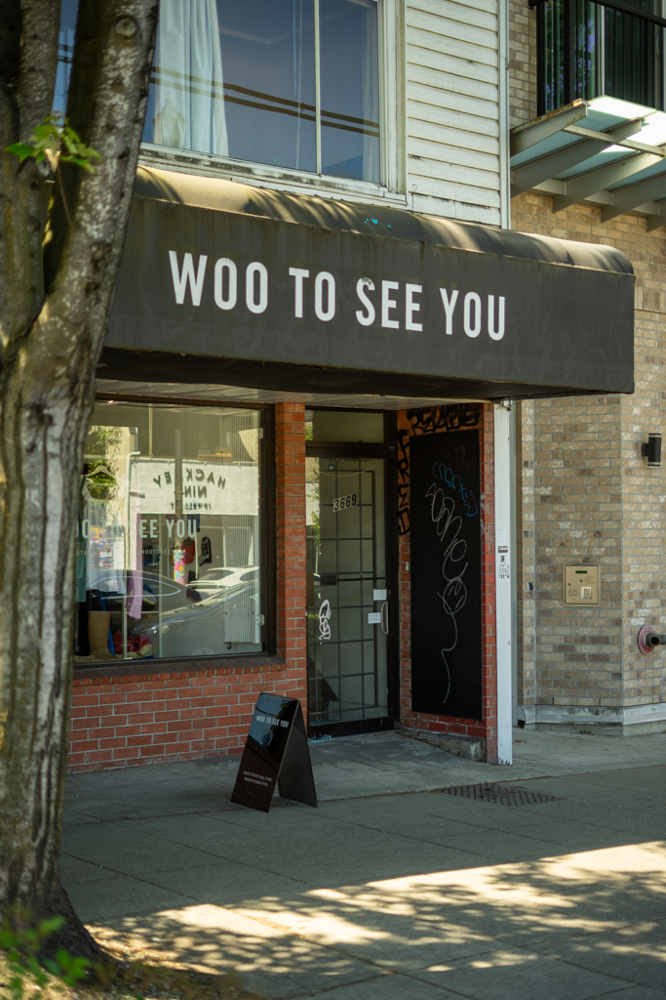
12. Woo To See You
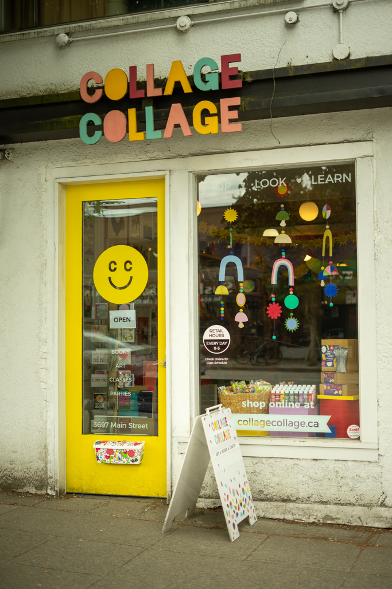
13. Collage Collage
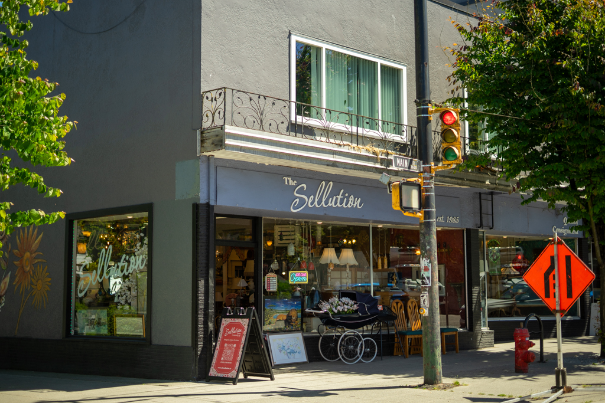
14. The Sellution Quality Consignment
At this point, you're probably ready to head back to the Skytrain. If you are leaving from your last stop, maybe another snack at Liberty Bakery or Coco Et Olive. If you've enjoyed your time in the neighbourhood, and want to keep exploring, check out my "Evening in Mt. Pleasant" for recommendations on bars, restaurants, and late night activities.
Either works — pick one in the guide
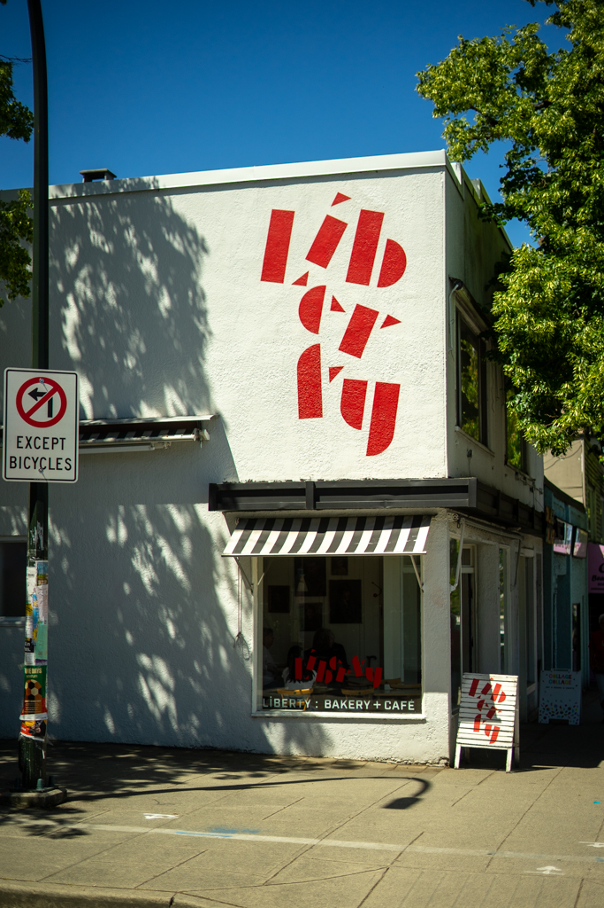
15. Liberty Bakery + Café
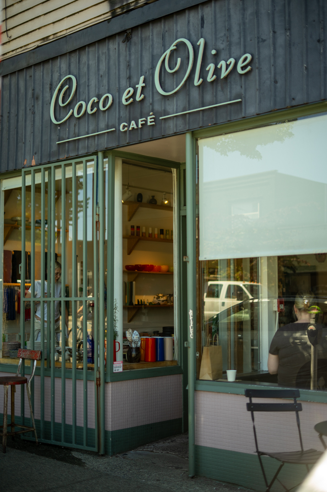